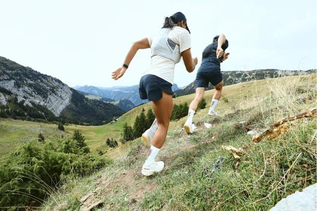

![Salomon logo](data:image/svg+xml,%3c?xml%20version='1.0'%20encoding='UTF-8'?%3e%3csvg%20id='Layer_2'%20xmlns='http://www.w3.org/2000/svg'%20width='1825.87'%20height='203.3'%20viewBox='0%200%201825.87%20203.3'%3e%3cdefs%3e%3cstyle%3e.cls-1{fill:%23fff;}%3c/style%3e%3c/defs%3e%3cg%20id='Layer_1-2'%3e%3cpath%20class='cls-1'%20d='M332.26,2.3l-106.63,199h71.84l16.89-36h78.38l6.69,36h71.83L430.1,2.3h-97.84ZM375.67,42.3h.59l13.35,84h-58.07l44.13-84Z'/%3e%3cpolygon%20class='cls-1'%20points='520.84%202.3%20489.97%20201.3%20660.53%20201.3%20667.63%20153.3%20565.83%20153.3%20589.64%202.3%20520.84%202.3'/%3e%3cpolygon%20class='cls-1'%20points='1168.84%202.3%201103%20151.3%201102.44%20151.3%201084.11%202.3%20996.2%202.3%20919.88%20201.3%20987.12%20201.3%201037.34%2057.3%201037.9%2057.3%201053.84%20201.3%201135.35%20201.3%201197.23%2061.3%201197.86%2061.3%201208.16%20201.3%201277.02%20201.3%201259.02%202.3%201168.84%202.3'/%3e%3cpolygon%20class='cls-1'%20points='1763.74%202.3%201740.34%20148.3%201739.77%20148.3%201674.31%202.3%201581.26%202.3%201550.34%20201.3%201615.9%20201.3%201635.99%2058.3%201636.56%2058.3%201698.6%20201.3%201794.87%20201.3%201825.87%202.3%201763.74%202.3'/%3e%3cpath%20class='cls-1'%20d='M707.74,190.04c-18.89-10.79-27.74-29.03-21.86-59.86l10.9-57.57c5.94-30.75,21.86-49.31,44.93-60.1,23.07-10.79,52.93-12.51,87.17-12.51s63.11,1.72,82.01,12.51c18.61,10.79,27.45,29.35,21.51,60.1l-10.9,57.57c-5.87,30.74-21.58,48.98-44.29,59.86-22.71,10.88-53.14,12.84-87.31,12.84s-63.26-1.96-82.08-12.84M852.72,126.26l9.76-48.17c6.16-31.32-5.59-34.51-42.17-34.51-34.6,0-49.6,2.86-56.11,34.51l-9.76,48.17c-6.44,31.89,6.16,34.75,42.17,34.75s49.6-3.11,56.11-34.75'/%3e%3cpath%20class='cls-1'%20d='M1319.57,190.04c-18.89-10.79-27.67-29.03-21.86-59.86l10.97-57.57c5.94-30.75,21.86-49.31,44.86-60.1C1376.45,1.72,1406.46.08,1440.7.08s63.11,1.72,82.15,12.51c18.54,10.79,27.45,29.35,21.51,60.1l-10.97,57.57c-5.94,30.74-21.51,48.98-44.29,59.86-22.78,10.88-53.14,12.84-87.38,12.84-34.6,0-63.19-1.96-82.01-12.84M1464.62,126.26l9.69-48.17c6.23-31.32-5.59-34.51-42.17-34.51-34.6,0-49.67,2.86-56.11,34.51l-9.76,48.17c-6.51,31.89,6.23,34.75,42.24,34.75s49.67-3.11,56.11-34.75'/%3e%3cpath%20class='cls-1'%20d='M205.66.3c34.84,0,44.23,12.81,38.98,38.67l-6.51,31.33h-64.19l3.56-17.11c2.37-11.47.34-14-17.74-15.15-5.01-.32-14.77-.57-22.49-.57-12.39,0-25.12.33-31.99.9-10.95,1.15-13.67,3.44-14.52,7.7-1.44,7.12-.33,10.32,15.96,18.02l100.4,47.75c19.86,9.42,22.24,15.4,19.27,30.05l-4.16,19.41c-6.53,30.55-16.3,42.01-57.71,42.01H48.61c-38.52,0-53.28-12.85-47.35-41.43l5.94-28.57h61.46l-4.14,19.94c-1.19,5.73.84,9.4,9.49,10.87,7.12,1.15,15.93,1.39,32.78,1.39,10.93,0,23.38-.33,31.69-.82,10.59-.9,12.96-2.61,14.15-8.59,1.44-6.87-.34-9.4-21.86-19.7l-74.21-35.07c-29.23-13.98-34.57-24.85-30.75-43.65l3.9-18.64C36.14,7.74,47.41.3,90.02.3h115.64Z'/%3e%3c/g%3e%3c/svg%3e)

Predictable surface, minimal elevation
Smooth terrain
Great for beginners or recovery runs.
- Cushioned ride
- Flexible sole
- Moderate grip
- Lightweight build
Up to 42 km
Short
Short trail efforts still need grip and confidence, but they do not always demand the most protective or most cushioned option.